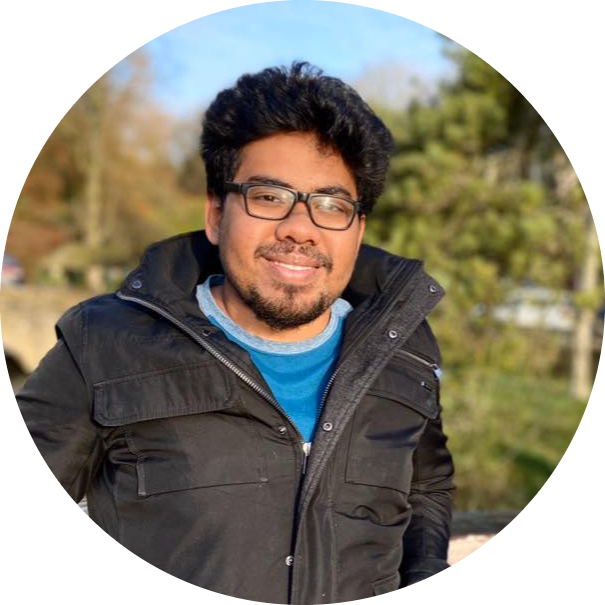

|
Sk Miraj Ahmed
I am currently working as a Computational Science Research Associate at the Computational Science Initiative (CSI), Brookhaven National Laboratory. My research focuses on developing novel computer vision and machine learning algorithms, with a special emphasis on accelerating fundamental scientific discoveries. Prior to joining the lab, I completed my PhD at the University of California, Riverside, under the supervision of Dr. Amit K. Roy-Chowdhury, where I worked on Source-Free Unsupervised Domain Adaptation and its diverse applications in computer vision. My research experience extends to areas such as multimodal learning, test-time adaptation, and privacy in machine learning. During my PhD, I had the opportunity to intern at Mitsubishi Electric Research Laboratories . I hold a master’s degree in electrical engineering from the Indian Institute of Science, Bangalore, where I focused on 3D reconstruction using novel convex optimization techniques, and a bachelor’s degree in electrical engineering from Jadavpur University, Kolkata.
Email /
CV /
Google Scholar /
LinkedIn
|

|
|
Updates
February 2025: Two papers accepted at CVPR 2025!
September 2024: One paper accepted at NeurIPS 2024!
July 2024: Joined Brookhaven National Laboratory as a research associate!
October 2023: One paper accepted at WACV 2024!
July 2023: One paper accepted at ICCV 2023!
July 2022: One paper accepted at ECCV 2022 (Oral)!
June 2021: Joined MERL as a summer intern!
February 2021: One paper accepted at CVPR 2021 (Oral)!
February 2020: One paper accepted at CVPR 2020 !
|
Effective Restoration of Source Knowledge in Continual Test Time Adaptation
Fahim Faisal Niloy, Sk Miraj Ahmed , Dripta S. Raychaudhuri, Samet Oymak and Amit K. Roy-Chowdhury
IEEE/CVF Winter Conference on Applications of Computer Vision (WACV), 2024
|
SUMMIT: Source-Free Adaptation of Uni-Modal Models to Multi-Modal Targets
Cody Simons, Dripta S. Raychaudhuri,Sk Miraj Ahmed , Suya You, Konstantinos Karydis and Amit K. Roy-Chowdhury
Proceedings of the IEEE/CVF International Conference on Computer Vision (ICCV), 2023
|
Source distribution weighted multisource domain adaptation without access to source data
Sk Miraj Ahmed, Dripta S. Raychaudhuri, Samet Oymak and Amit K. Roy-Chowdhury
Deep Learning 48, 81, 2023
|
Cross-Modal Knowledge Transfer Without Task-Relevant Source Data
Sk Miraj Ahmed, Suhas Lohit, Kuan-Chuan Peng, Michael J. Jones and Amit K. Roy-Chowdhury
(* equal contribution)
European Conference on Computer Vision (ECCV), 2022 (Oral)
|
Unsupervised Multi-source Domain Adaptation Without Access to Source Data
Sk Miraj Ahmed*, Dripta S. Raychaudhuri*, Sujoy Paul*, Samet Oymak and Amit K. Roy-Chowdhury
* equal contribution
IEEE/CVF Conference on Computer Vision and Pattern Recognition (CVPR), 2021 (Oral)
|
Camera on-boarding for person re-identification using hypothesis transfer learning
Sk Miraj Ahmed, Aske R. Lejbolle, Rameswar Panda and Amit K. Roy-Chowdhury
IEEE/CVF Conference on Computer Vision and Pattern Recognition (CVPR), 2020
|
Least-squares registration of point sets over SE (d) using closed-form projections
Sk. Miraj Ahmed Niladri R. Das and Kunal N. Chaudhury
Computer Vision and Image Understanding (CVIU), 2019
|
Global multiview registration using non-convex ADMM
Sk Miraj Ahmed, and Kunal N. Chaudhury
International Conference on Image Processing (ICIP), 2017
|
A scalable ADMM algorithm for rigid registration
Rajat Sanyal, Sk Miraj Ahmed, M jaiswal and Kunal N. Chaudhury
IEEE Signal Processing Letters (SPL), 2017
|
|
{kind=link}